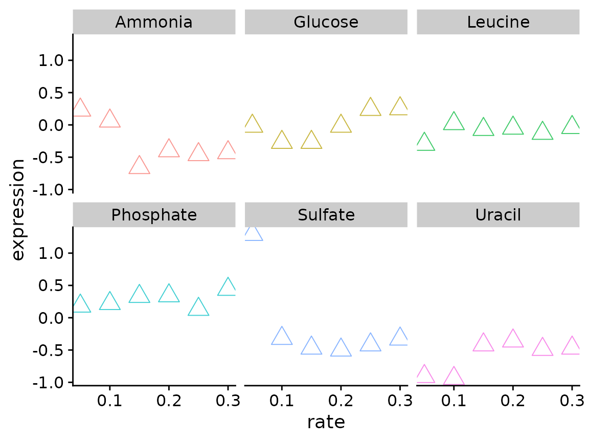

What is a function?
As an analyst you will eventually find yourself in the position of wanting to reuse a block of code. There are two general ways to do this:
- copy-and-paste
- write a function
A function is essentially a block of code that you’ve given a name and saved for later. Functions have several advantages:
- They make your code easier to read
- They reduce the chance of mistakes from repeated copying and pasting
- They make it easier to adapt your code for different requirements
Further reading
- R for Data Science by Garrett Grolemund and Hadley Wickham
- Advanced R by Hadley Wickham
# An example: you want to rescale a numeric vector so all values are between 0 and 1
a <- rnorm(n = 10)
a
#> [1] 1.3381602 -1.0359953 0.1735756 1.1783708 0.9165317 0.3626057
#> [7] -1.3470050 1.0878826 1.8164995 1.0081197
rng <- range(a)
(a - rng[1]) / (rng[2] - rng[1])
#> [1] 0.84879449 0.09831178 0.48066332 0.79828425 0.71551556 0.54041673
#> [7] 0.00000000 0.76968047 1.00000000 0.74446701
# What if we want to repeat this on other vectors?
# One way is to copy and paste
b <- rnorm(n = 10)
c <- rnorm(n = 10)
rng <- range(b)
new_b <- (b - rng[1]) / (rng[2] - rng[1])
rng <- range(c)
new_c <- (c - rng[1]) / (rng[2] - rng[1])
# A better way is to write a function...How to write a function
There are three general steps for writing functions:
- Pick a name
- Identify the inputs
- Add code to the body
# Lets write a function to rescale a numeric vector
rescale_vec <- function(x) {
rng <- range(x)
(x - rng[1]) / (rng[2] - rng[1])
}
rescale_vec(b)
rescale_vec(c)Write functions for the following bits of code
# function 1
x / sum(x)
# function 2
(x + y) / z
# function 3
sqrt(sum((x - mean(x))^2) / (length(x) - 1))The function execution environment
- When running a function an execution environment is created, which is separate from the global environment
- The execution environment contains objects created within the function
- The execution environment follows the “fresh start” principle
- When R searches for an object referenced by a function, the execution environment takes precedence
Can objects present in the global environment be referenced from within a function?
# Earlier we saved a numeric vector "a"
a
#> [1] 1.3381602 -1.0359953 0.1735756 1.1783708 0.9165317 0.3626057
#> [7] -1.3470050 1.0878826 1.8164995 1.0081197
sum_nums <- function(x) {
x + a
}
# Yes!
sum_nums(10)
#> [1] 11.338160 8.964005 10.173576 11.178371 10.916532 10.362606 8.652995
#> [8] 11.087883 11.816500 11.008120Can code executed within a function modify an object present in the global environment?
sum_nums <- function(x) {
a <- x + a
}
# When we run sum_nums(), will this overwrite our original vector?
sum_nums(10)
# No! (not when using the '<-' assignment operator)
a
#> [1] 1.3381602 -1.0359953 0.1735756 1.1783708 0.9165317 0.3626057
#> [7] -1.3470050 1.0878826 1.8164995 1.0081197A more relevant example
Using the Brauer data lets create a scatter plot comparing growth rate vs expression for the gene YDL104C. Use facet_wrap() to create a separate plot for each nutrient.
What if you want to create this plot for other genes? Write a function the takes a data.frame and systematic_name as inputs and creates scatter plots for each nutrient
# Fill in the function body
# You can include default values for your arguments
plot_expr <- function(input, sys_name = "YNL049C") {
????
}
p <- plot_expr(
input = brauer_gene_exp,
sys_name = "YDL104C"
)
# You can also use the %>% pipe with your custom functions
p <- brauer_gene_exp %>%
plot_expr(sys_name = "YDL104C")
p
Modify our plotting function to add the gene name as the plot title and the molecular function (MF) as a subtitle
brauer_gene_exp %>%
plot_expr("YDL104C")
Conditional statements
if statements allow you to execute code depending on defined conditions.
if (condition) {
code executed when condition is TRUE
} else {
code executed when condition is FALSE
}R has a set of operators that can be used to write conditional statements
| Operator | Description |
|---|---|
| < | less than |
| <= | less or equal |
| > | greater than |
| >= | greater or equal |
| == | equal |
| != | not equal |
| !x | not x |
| x || y | x or y |
| x && y | x and y |
| x %in% y | x is present in y |
Add an if statement to our plotting function to account for a missing gene name
plot_expr <- function(input, sys_name) {
gg_data <- input %>%
filter(systematic_name == sys_name)
plot_title <- gg_data$name[1]
plot_sub <- gg_data$MF[1]
????
gg_data %>%
ggplot(aes(rate, expression, color = nutrient)) +
geom_point(size = 2) +
labs(title = plot_title, subtitle = plot_sub) +
facet_wrap(~ nutrient) +
theme_cowplot() +
theme(legend.position = "none")
}
brauer_gene_exp %>%
plot_expr("YNL095C")
Conditional statements can be linked together
# Using 'else if'
if (condition_1) {
executed when condition_1 is TRUE
} else if (condition_2) {
executed when condition_1 is FALSE and condition_2 is TRUE
} else {
executed when condition_1 and condition_2 are FALSE
}
# The 'and' operator
if (condition_1 && condition_2) {
executed when condition_1 and condition_2 are TRUE
} else {
executed when condition_1 or condition_2 are FALSE
}
# The 'or' operator
if (condition_1 || condition_2) {
executed when condition_1 or condition_2 are TRUE
} else {
executed when condition_1 and condition_2 are FALSE
}Checking inputs
When writing functions it can be useful to check input values to make sure they are valid. Lets modify our plotting function to check that sys_name is a string.
plot_expr <- function(input, sys_name) {
if (!is.character(sys_name)) {
stop("sys_name must be a string!")
}
gg_data <- input %>%
filter(systematic_name == sys_name)
plot_title <- gg_data$name[1]
plot_sub <- gg_data$MF[1]
if (plot_title == "") {
plot_title <- sys_name
}
gg_data %>%
ggplot(aes(rate, expression, color = nutrient)) +
geom_point(size = 2) +
labs(title = plot_title, subtitle = plot_sub) +
facet_wrap(~ nutrient) +
theme_cowplot() +
theme(legend.position = "none")
}
brauer_gene_exp %>%
plot_expr("YDL104C")Modify our plotting function to check that sys_name is present in the input. Hint: try the %in% operator
plot_expr <- function(input, sys_name) {
if (!is.character(sys_name)) {
stop("sys_name must be a string!")
}
if ( ???? ) {
stop( ???? )
}
gg_data <- input %>%
filter(systematic_name == sys_name)
plot_title <- gg_data$name[1]
plot_sub <- gg_data$MF[1]
if (plot_title == "") {
plot_title <- sys_name
}
gg_data %>%
ggplot(aes(rate, expression, color = nutrient)) +
geom_point(size = 2) +
labs(title = plot_title, subtitle = plot_sub) +
facet_wrap(~ nutrient) +
theme_cowplot() +
theme(legend.position = "none")
}Passing arguments with the ellipsis (…)
The ellipsis allows a function to take an arbitrary number of arguments, which can then be passed to an inner function. This is nice when you have an inner function that has a lot of useful arguments. Lets first try this with our simple rescale_vec() function.
rescale_vec <- function(x, ...) {
rng <- range(x, ...)
(x - rng[1]) / (rng[2] - rng[1])
}
rescale_vec(a)
#> [1] 0.84879449 0.09831178 0.48066332 0.79828425 0.71551556 0.54041673
#> [7] 0.00000000 0.76968047 1.00000000 0.74446701
a[1] <- NA
rescale_vec(a, na.rm = T)
#> [1] NA 0.09831178 0.48066332 0.79828425 0.71551556 0.54041673
#> [7] 0.00000000 0.76968047 1.00000000 0.74446701Modify our plotting function so the user can change the point size, shape, and alpha
# A cumbersome way
plot_expr <- function(input, sys_name, pt_size = 2, pt_shape = 1, pt_alpha = 1) {
input %>%
filter(systematic_name == sys_name) %>%
ggplot(aes(rate, expression, color = nutrient)) +
geom_point(size = pt_size, shape = pt_shape, alpha = pt_alpha) +
facet_wrap(~ nutrient) +
theme_cowplot() +
theme(legend.position = "none")
}
# With the ellipsis
plot_expr <- function(input, sys_name, ...) {
input %>%
filter(systematic_name == sys_name) %>%
ggplot(aes(rate, expression, color = nutrient)) +
geom_point(...) +
facet_wrap(~ nutrient) +
theme_cowplot() +
theme(legend.position = "none")
}
# Now we can easily change the point size and shape
plot_expr(
input = brauer_gene_exp,
sys_name = "YDL104C",
size = 5,
shape = 2,
alpha = 0.75
)